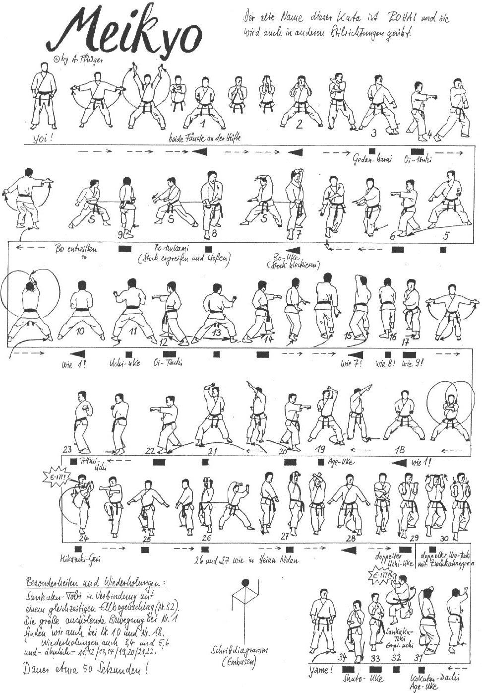

Meikyo

- Yoi andando in Hachiji Dachi.
- Allargando la gamba destra passare in Kiba Dachi, entrambe le braccia eseguono un movimento circolare verticale dal basso verso l’alto e incrociandosi frontalmente vengono portate in Hikite.
- Sul posto (mantenendo Kiba Dachi) aprire le braccia con Shuto Kakiwake Chudan.
- Avanzare verso sinistra di 45° in Zenkutsu Dachi sinistro, Gedan barai sinistro.
- Avanzare in Zenkutsu Dachi ed eseguire Oi Tzuki Chudan destro.
- Ruotare sul piede sinistro ruotando verso destra di 90° in posizione Zenkutsu Dachi, eseguire Gedan barai destro.
- Avanzare in Zenkutsu Dachi ed eseguire Oi Tzuki Chudan sinistro.
- Ruotare sul piede sinistro avanzando, passare in Migi Kokutsu Dachi ed eseguire Hidari Jodan Shuto Age Uke mano sinistra e Migi Gedan Yohon Nukite palmo verso l’alto e parallelo al terreno.
- Sul posto, contemporaneamente in posizione Kokutsu Dachi, eseguire Bo Uke.
- Piccolo Tsuri Ashi ed eseguire Bo Osae.
- Mawatte in Zenkutsu Dachi facendo perno sugli avampiedi (i piedi sono nella stessa linea, la gamba sinistra davanti).
- Avanzando con la gamba destra, portarla in linea con la sinistra passando in Kiba Dachi; entrambe le braccia eseguono un movimento circolare verticale dal basso verso l’alto e incrociandosi frontalmente vengono portate in Hikite.
- Avanzare verso sinistra di 45° in Zenkutsu Dachi sinistro, eseguire Uchi Uke sinistro.
- Avanzare in Zenkutsu Dachi ed eseguire Oi Tzuki Chudan destro.
- Ruotare sul piede sinistro ruotando verso destra di 90° in posizione Zenkutsu Dachi, eseguire Uchi Uke destro.
- Avanzare in Zenkutsu Dachi ed eseguire Oi Tzuki Chudan sinistro.
- Ruotare sul piede sinistro avanzando, passare in Migi Kokutsu Dachi ed eseguire Hidari Jodan Shuto Age Uke mano sinistra e Migi Gedan Yohon Nukite palmo verso l’alto e parallelo al terreno.
- Sul posto, contemporaneamente in posizione Kokutsu Dachi, eseguire Bo Uke.
- Piccolo Tsuri Ashi ed eseguire Bo Osae.
- Mawatte in Zenkutsu Dachi facendo perno sugli avampiedi (i piedi sono nella stessa linea, la gamba sinistra davanti).
- Avanzando con la gamba destra, portarla in linea con la sinistra passando in Kiba Dachi; entrambe le braccia eseguono un movimento circolare verticale dal basso verso l’alto e incrociandosi frontalmente vengono portate in Hikite.
- Avanzare verso sinistra di 45° in Zenkutsu Dachi sinistro, eseguire Age Uke sinistro.
- Avanzare in Zenkutsu Dachi ed eseguire Oi Tzuki Chudan destro.
- Ruotare sul piede sinistro ruotando verso destra di 90° in posizione Zenkutsu Dachi, eseguire Age Uke destro.
- Avanzare in Zenkutsu Dachi ed eseguire Oi Tzuki Chudan sinistro.
- Spostando la gamba sinistra di 45°, andare in Kiba Dachi ed eseguire Hidari Tettsui Uchi orizzontale.
- Apro la mano sinistra verticale ed eseguire Migi Mika Tzuki Geri sul posto (Kiai), scendo in Kokutsu sinistro ed eseguo Ren Yoko Gedan Shuto Uke.
- Tengo la posizione ed eseguo Uchi Uke sinistro e Age Uke destro (1a tecnica Heian Nidan).
- Ripeto la stessa tecnica avanzando in Migi Kokutsu Dachi.
- Avanzare in Hidari Zenkutsu Dachi eseguendo Ren Yoko Gedan Barai.
- Avanzare in Migi Kokutsu Dachi eseguendo Ren Uchi Uke Chudan.
- Avanzare Yoriashi in Migi Kokutsu Dachi e attacco doppio pugno (Hasami Tzuki).
- Mawatte spostando la gamba sinistra vado in Hidari Kokutsu Dachi ed eseguo Gyako Age Uke Jodan destro a mano aperta seguito da Age Uke sinistro.
- Allungo il braccio sinistro mano aperta ed eseguo un salto in avanti di 180° (Sankaku tobi o salto triangolare), Tobi Jodan empi (KIAI!).
- Scendo in posizione Kokutsu Dachi con la gamba destra davanti, eseguire Shuto Uke Chudan destro.
- Indietreggiando in Kokutsu Dachi, Shuto Uke Chudan sinistra.
- Yame.